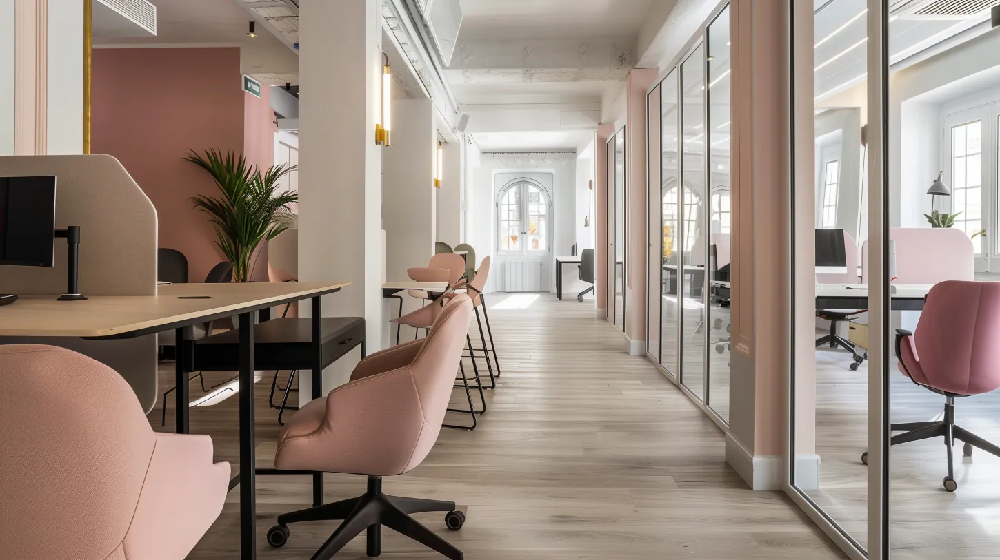
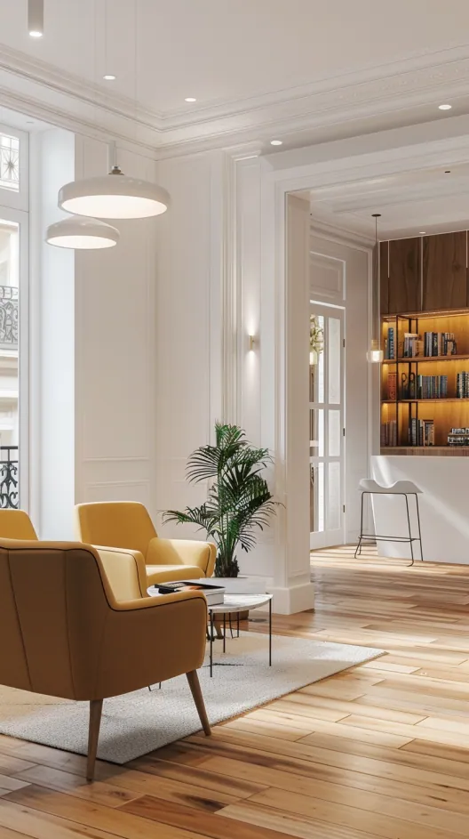
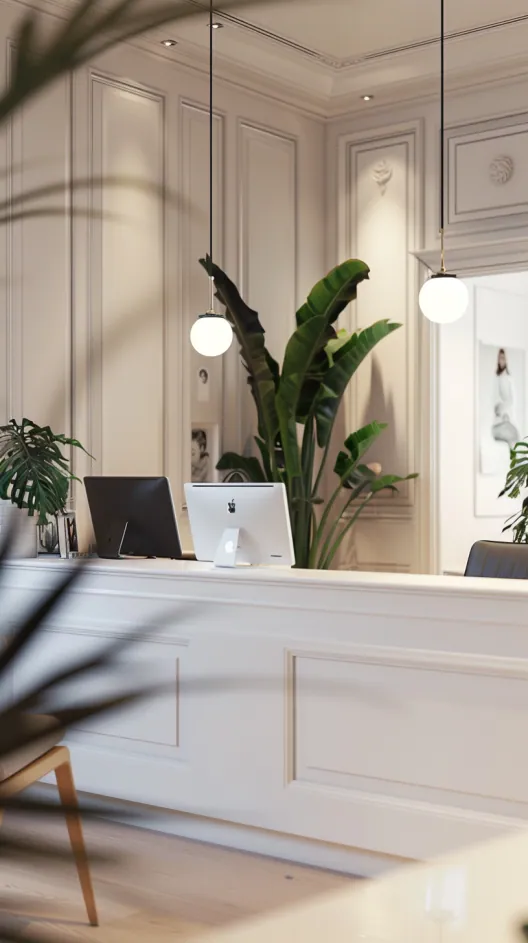
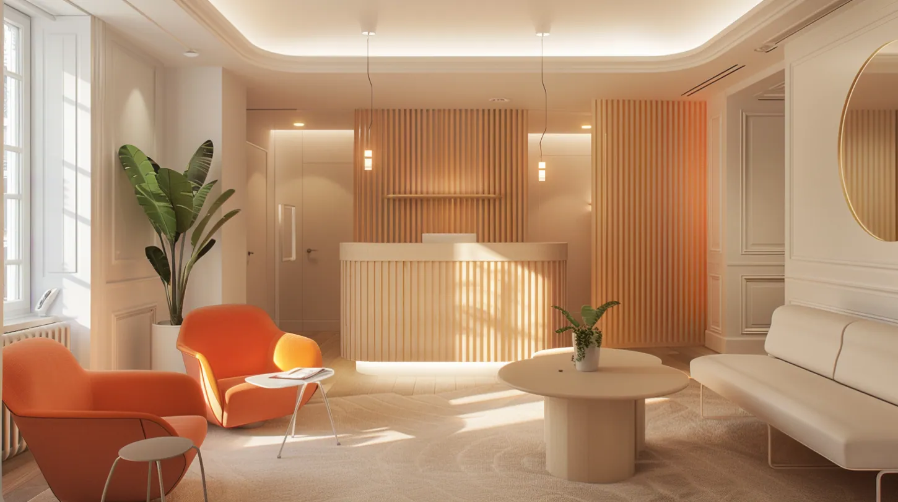

Paris
Un espace de travail doit porter une image. Ici, la réception est un argument — sobre, précise, mémorable.




À Paris, cet espace de travail de 80 m² a été conçu par John Rozenblum, designer d'intérieur, avec une conviction : un lieu professionnel doit porter une image avant même que les mots ne parlent. La réception est sobre, précise, mémorable — premier contact physique avec l'entreprise, elle en dit long sur l'exigence de l'équipe. Les matières sont nobles, les lignes claires, l'acoustique travaillée. Pas de décoration superflue : chaque détail est fonctionnel et signifiant. Un projet d'aménagement professionnel à Paris où le design intérieur devient un argument commercial à part entière.
Un espace de travail reçoit avant de faire travailler. Sur 80 m², le projet accorde donc à la réception une part disproportionnée de l'attention : c'est la première pièce que voit un client, souvent la seule dont il se souviendra, et elle parle avant que quiconque ait pris la parole. Le reste du plateau est traité avec la même rigueur, mais sans chercher à se faire remarquer.
La banque d'accueil est traitée en laque blanche sous des suspensions globe, dans une pièce qui a conservé ses moulures. Ailleurs, une seconde configuration joue les tasseaux de bois rétroéclairés et des assises orange. Dans les deux cas, le principe est identique : un seul élément fort, posé dans un cadre calme. Une réception qui multiplie les effets ne se retient pas — celle qui n'en propose qu'un se grave.
Les postes de travail sont installés en enfilade derrière des cloisons vitrées. Le vitrage n'est pas là pour surveiller mais pour partager la lumière : dans un plateau en longueur, fermer une pièce en dur reviendrait à en assombrir trois. Le parquet massif court sans interruption du hall aux bureaux, ce qui fait lire l'ensemble comme un seul lieu et non comme une succession de cellules.
Les plantes ne sont pas des accessoires de fin de chantier. Elles sont positionnées comme des masses : devant une fenêtre pour filtrer, à l'angle d'une banque d'accueil pour adoucir une arête, au bout d'une enfilade pour donner une profondeur. C'est le seul élément vivant d'un lieu par définition fonctionnel, et c'est ce qui empêche la sobriété de basculer dans la froideur.
Work Space rejoint les aménagements de bureaux conduits par John Rozenblum à Paris, aux côtés d'Étienne Marcel et du showroom du Marais.
Ce projet fait partie des réalisations de design d'intérieur à Paris de John Rozenblum. Pour discuter d'un projet similaire ou d'une rénovation sur mesure, prenez contact.
Un projet ?
Chaque projet commence par une conversation. Partagez votre vision — je m'occupe du reste.
Prendre contact